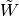
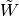

5. Tensor regression
TensorLy also allows you to perform Tensor Regression.
5.1. Setting
Tensor regression is available in the module tensorly.regression.
Given a series of  tensor samples/observations,
tensor samples/observations,  , and corresponding labels
, and corresponding labels  , we want to find the weight tesor  such that, for each
, we want to find the weight tesor  such that, for each  :
:

We additionally impose that be a rank-r CP decomposition (Kruskal regression) or a rank  -Tucker decomposition (Tucker regression).
For a detailed explanation on tensor regression, please refer to [1].
-Tucker decomposition (Tucker regression).
For a detailed explanation on tensor regression, please refer to [1].
TensorLy implements both types of tensor regression as scikit-learn-like estimators.
For instance, Krusal regression is available through the tensorly.regression.KruskalRegression object. This implements a fit method that takes as parameters X, the data tensor which first dimension is the number of samples, and y, the corresponding vector of labels.
Given a set of testing samples, you can use the predict method to obtain the corresponding predictions from the model.
5.2. References
| [1] | W. Guo, I. Kotsia, and I. Patras. “Tensor Learning for Regression”, IEEE Transactions on Image Processing 21.2 (2012), pp. 816–827 |